نقاشیها، چاپها و عکسهای این سایت در مالکیت عمومیاند. تصاویر از ویکیانبار آمدهاند؛ برای دیدنِ پروندهٔ اصلی و توضیحِ آن، پیوندِ هر مورد را دنبال کنید.
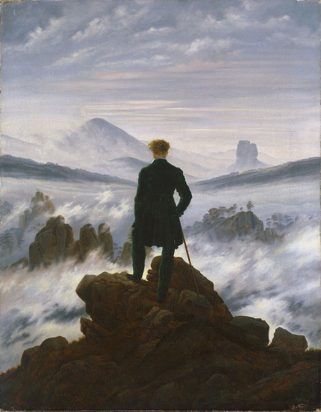
کونستهاله، هامبورگ. مالکیت عمومی، از ویکیانبار.

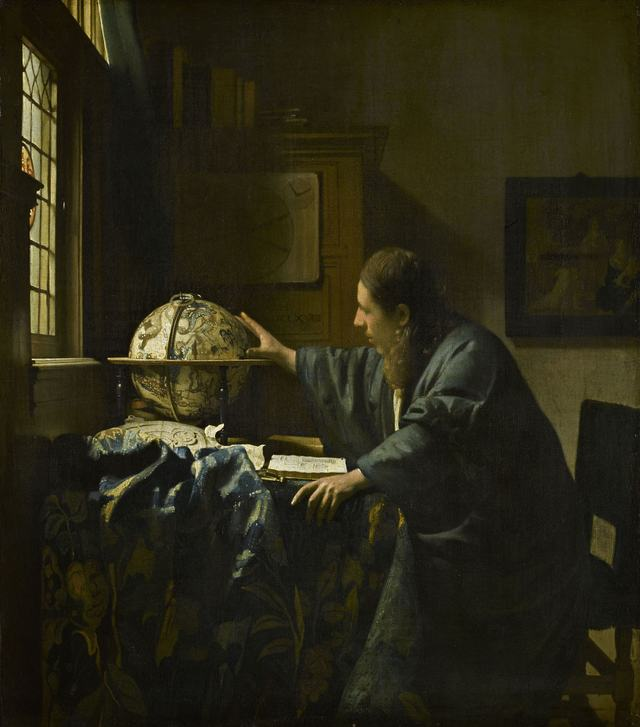
موزهٔ لوور، پاریس. مالکیت عمومی، از ویکیانبار.

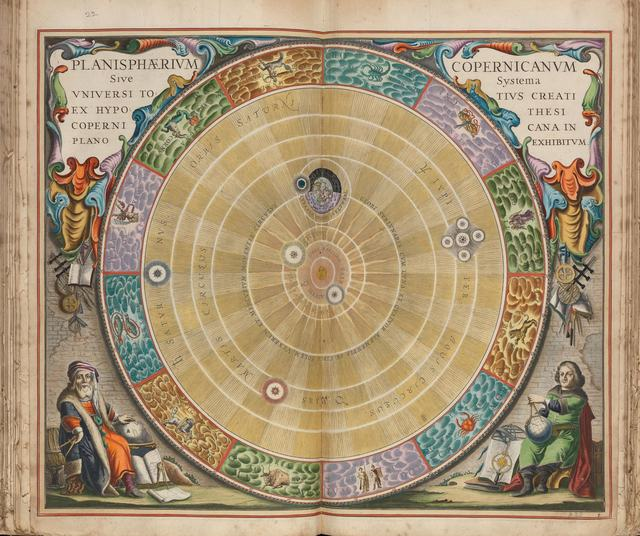
مالکیت عمومی، از ویکیانبار.
.jpg){kind=link}
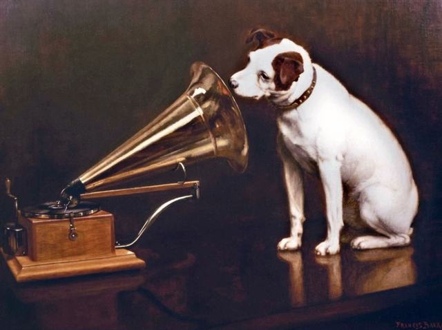
مالکیت عمومی، از ویکیانبار.


موزهٔ اشتدل، فرانکفورت. مالکیت عمومی، از ویکیانبار.

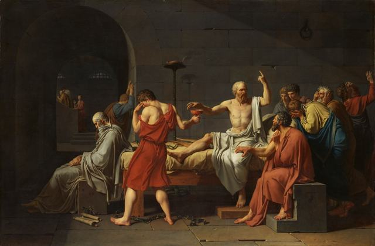
موزهٔ هنر متروپولیتن، نیویورک. مالکیت عمومی، از ویکیانبار.


موریتسهاوس، لاهه. مالکیت عمومی، از ویکیانبار.

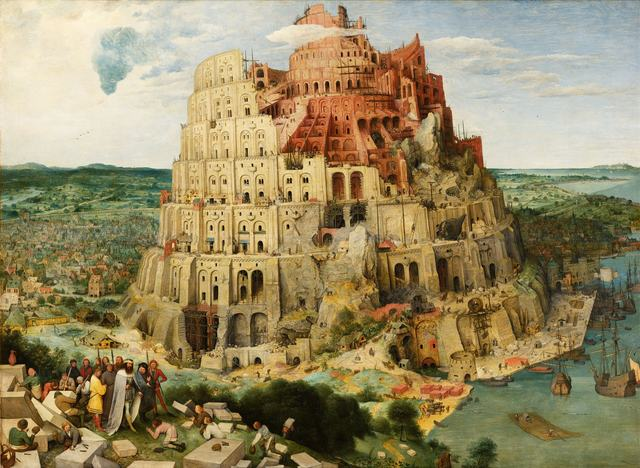
موزهٔ تاریخ هنر، وین. مالکیت عمومی، از ویکیانبار.
_-_Google_Art_Project_-_edited.jpg){kind=link}

حکاکی. مالکیت عمومی، از ویکیانبار.
.jpg){kind=link}

اچینگ. مالکیت عمومی، از ویکیانبار.

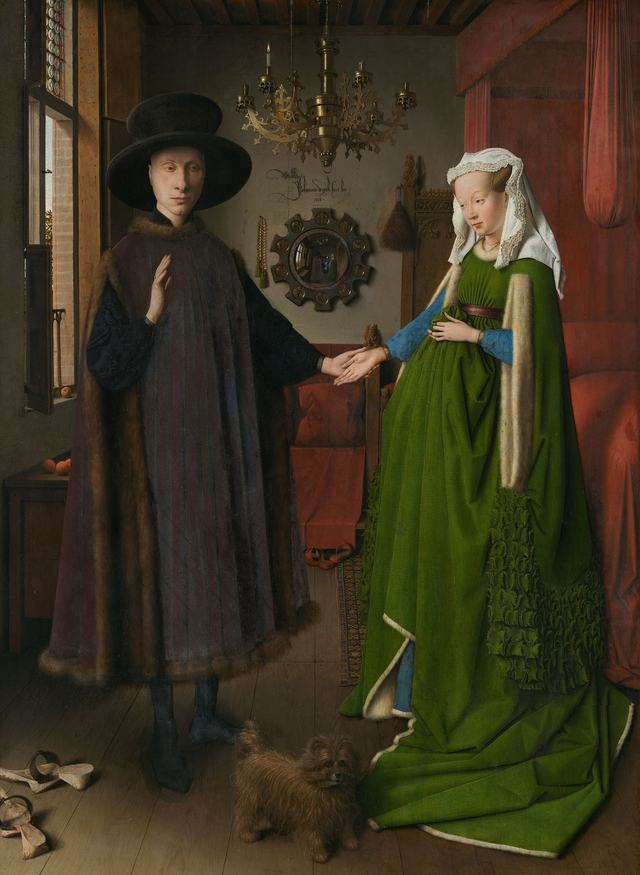
نگارخانهٔ ملی، لندن. مالکیت عمومی، از ویکیانبار.
.jpg){kind=link}
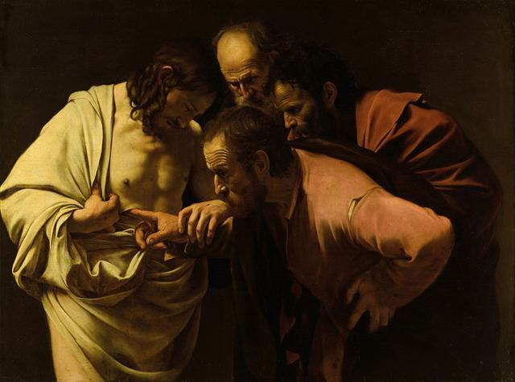
نگارخانهٔ سانسوسی، پوتسدام. مالکیت عمومی، از ویکیانبار.


موزهٔ مارموتان مونه، پاریس. مالکیت عمومی، از ویکیانبار.


نگارخانهٔ ملی، لندن. مالکیت عمومی، از ویکیانبار.

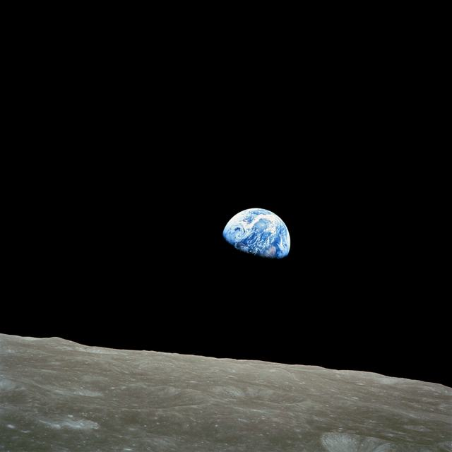
ناسا. مالکیت عمومی، از ویکیانبار.

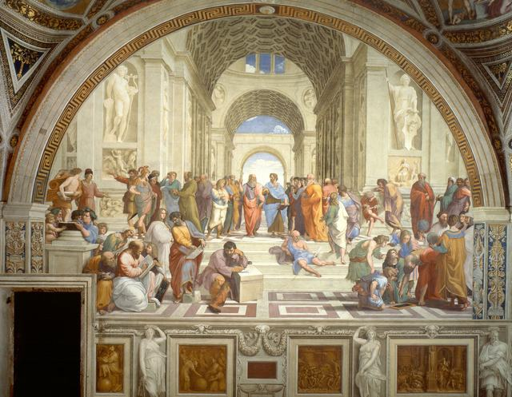
کاخ حواری، واتیکان. مالکیت عمومی، از ویکیانبار.


در ۱۹۹۰ از موزهٔ ایزابلا استوارت گاردنر، بوستون، ربوده شد. مالکیت عمومی، از ویکیانبار.

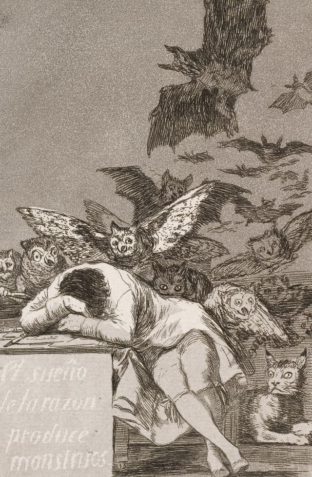
اچینگ و آکواتینت. مالکیت عمومی، از ویکیانبار.
,_from_Los_Caprichos_-_Google_Art_Project.jpg){kind=link}
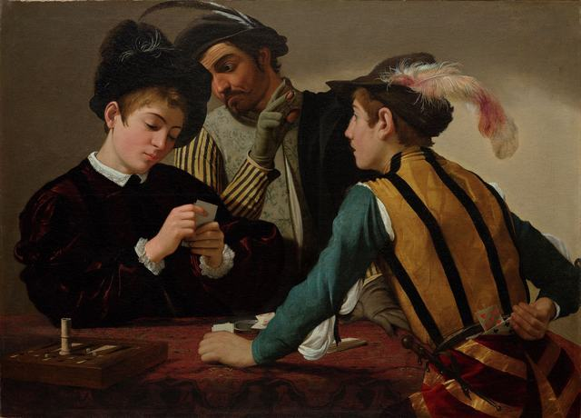
موزهٔ هنر کیمبل، فورتورث. مالکیت عمومی، از ویکیانبار.
_Kimbell_Art_Museum.jpg){kind=link}
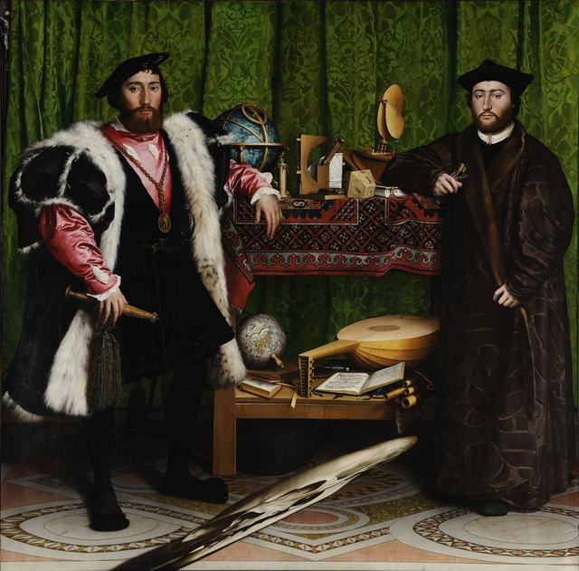
نگارخانهٔ ملی، لندن. مالکیت عمومی، از ویکیانبار.

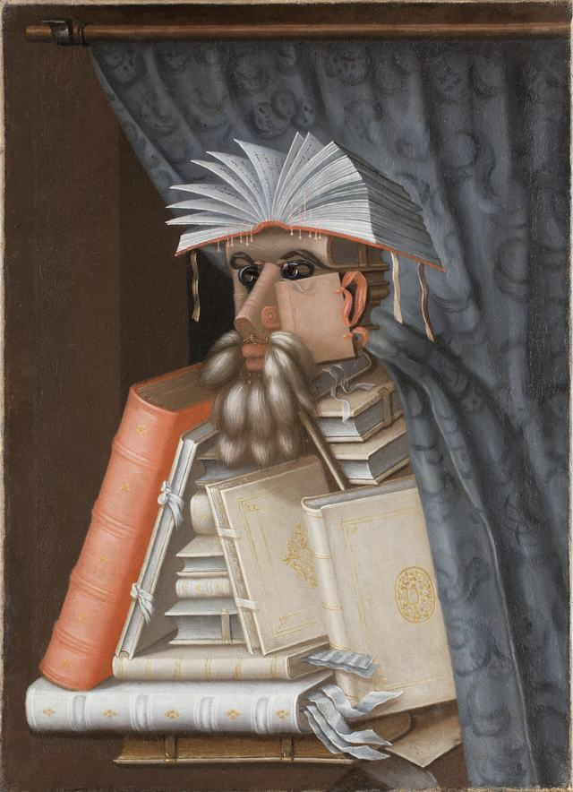
قلعهٔ اسکوکلوستر، سوئد. مالکیت عمومی، از ویکیانبار.
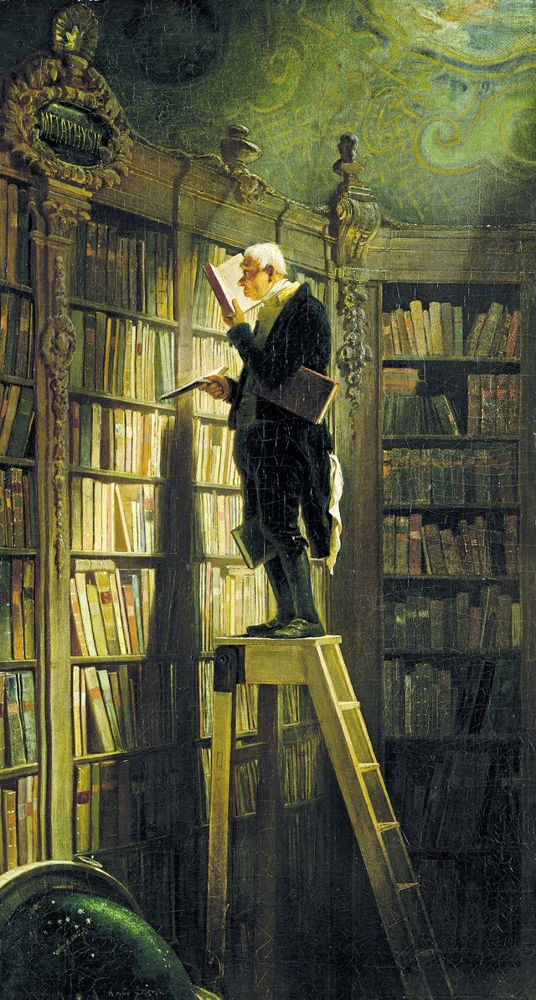
موزهٔ گئورگ شفر، شواینفورت. مالکیت عمومی، از ویکیانبار.

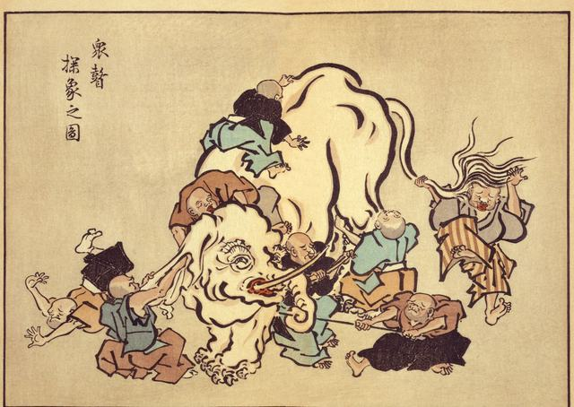
چاپ باسمهای. مالکیت عمومی، از ویکیانبار.

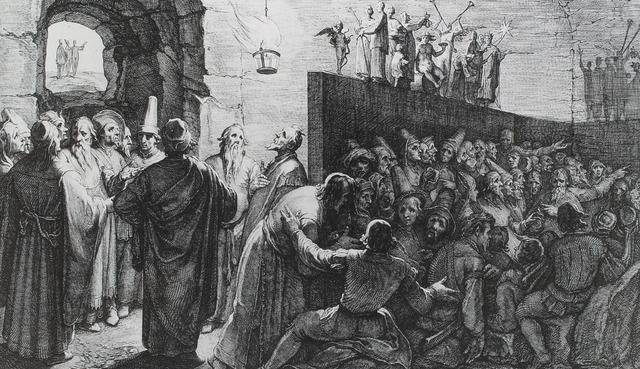
حکاکی. مالکیت عمومی، از ویکیانبار.

صدا
روایتِ فارسیِ فصلِ ۱ را دو صدای ساختگیِ ElevenLabs خواندهاند: صدای مردانه راویِ اصلی است و صدای زنانه بخشها را به نوبت با او میخواند. روایتِ فارسیِ فصلهای ۲ و ۳ را صدایی ساختگی خوانده است: مدلِ متنبهگفتارِ گویا بزرگ ۱٫۵، که همان Chatterbox-TTS-Persian-Farsi (مدلِ Chatterbox از Resemble AI، آموزشدیده برای فارسی) است، با مجوزِ CC BY-NC 4.0 (فقط برای استفادهٔ غیرتجاری)، همراه با رمزگشای صدای Chatterbox Turbo (مجوزِ MIT). صدای راوی از صدای گویندهای ایرانی در مجموعهدادهٔ Mana-TTS (مالکیتِ عمومی، CC0) الگو گرفته است. نسخهٔ صوتیِ انگلیسی با صدایی ساختگی روایت شده است: مدلِ متنبهگفتارِ Kokoro-82M (مجوز آپاچی ۲٫۰)، با تلفظِ misaki. صوت چگونه ساخته شد را ببینید.
حروف
Cormorant Garamond، Source Serif 4، Space Grotesk، IBM Plex Mono، Vazirmatn و Atkinson Hyperlegible؛ همه با مجوزِ SIL Open Font License (برای دیدنِ مجوز، روی نام کلیک کنید).